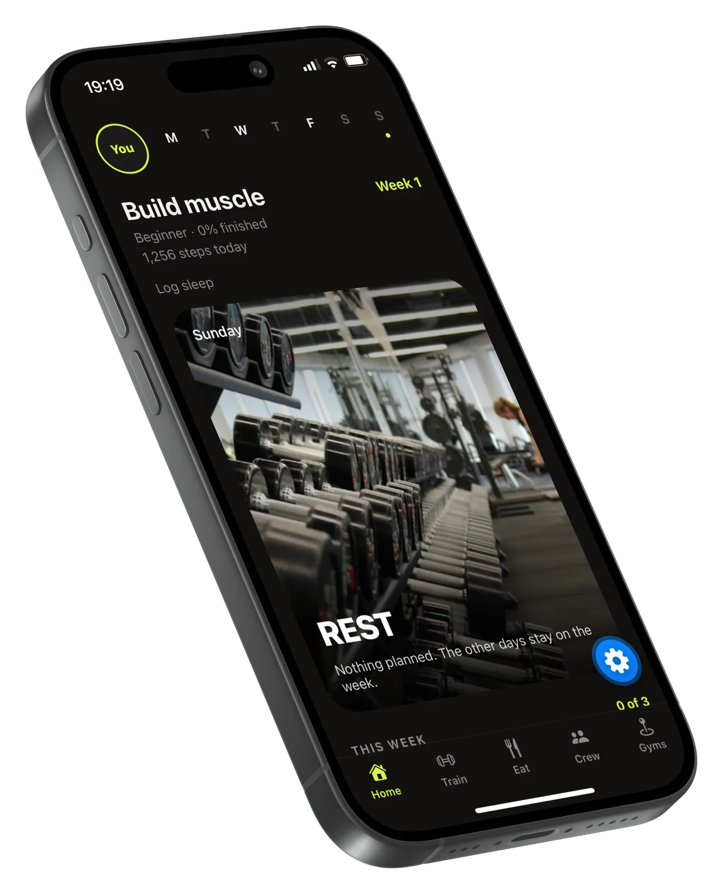
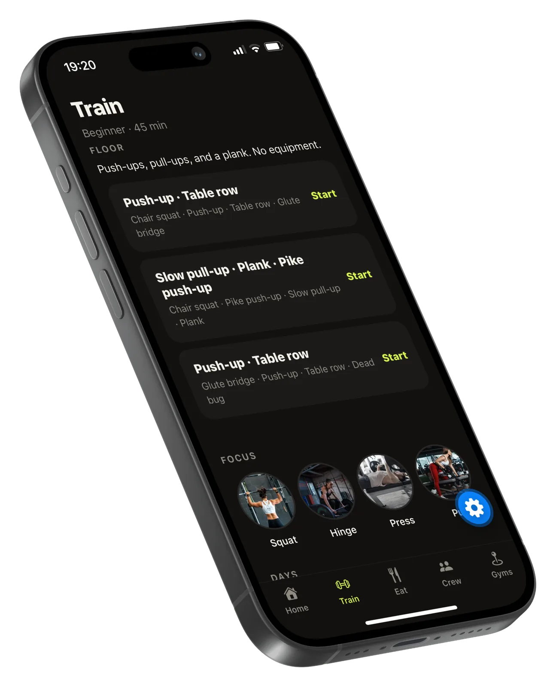
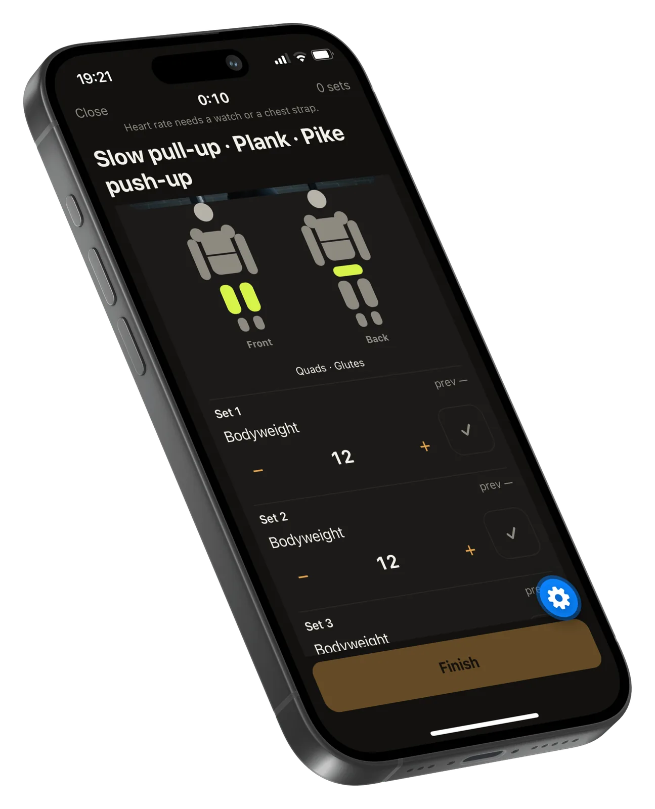
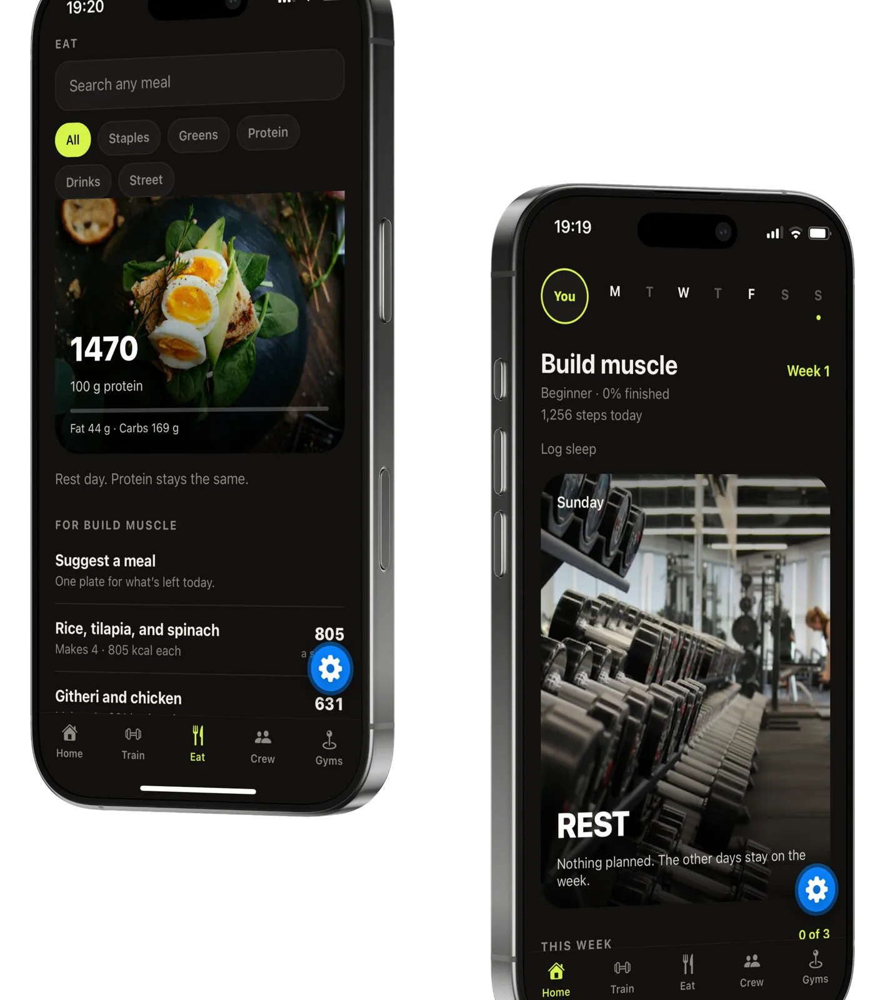
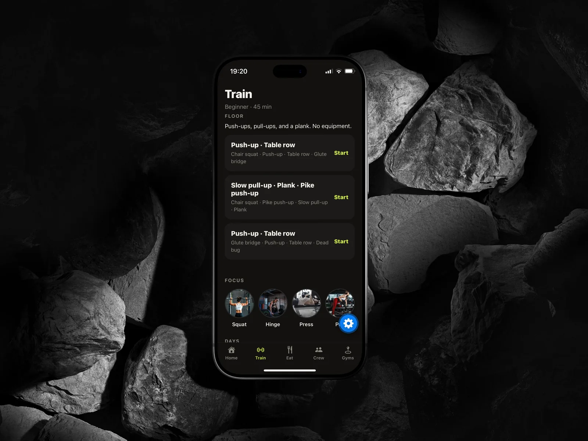
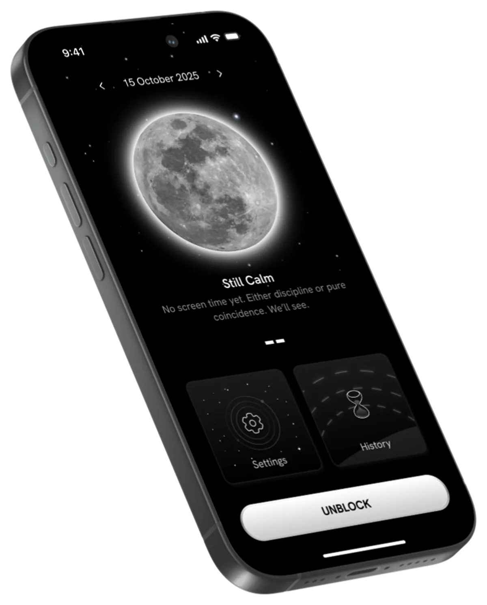

Gymy

A beginner week for building muscle usually lives in three apps. Gymy keeps the program, the session, and the plate together, and a rest day keeps the protein target where it was.
The problem
Problem statement
Building muscle as a beginner means deciding what to do today, logging it, and eating for it. Those three jobs usually sit in different products. A rest day then feels like the week has stopped, and the meal that fits what is left is a separate search.
The food that shows up is rarely the food people actually cook. The challenge: one week that holds the session and the plate, including a day with nothing planned.
Three products, one week
Strong · HevySet loggers
Set loggers record the reps cleanly and stop when the session ends. They have little to say about the rest of the day, or about what should be on the plate.
MyFitnessPalCalorie logs
Calorie logs know the plate and ignore whether today was a floor workout or a rest day. The protein target and the training plan never meet.
Nike Training ClubWorkout libraries
Workout libraries prescribe the session and leave dinner open. The gap is a week that knows the difference, and one plate for what is left, including food like githeri.
Four jobs
What each screen answers
Home answers where the week is. Train answers what to do today: a 45-minute floor session, with no equipment. The logger answers whether the sets are done and which muscles they hit. Eat answers with one plate for what is left.
Crew and Gyms stay in the tab bar, for the people and the places around the training. The week itself is the product: Build muscle, beginner, week 1, three sessions.
The week, the session, the plate
Rest stays on the week
Sunday is marked, and the card says nothing is planned. The line under it keeps the rest of the week in place. On Eat, the same day reads protein stays the same. Steps and sleep sit above the card, so the day is more than the workout.
A floor session you can start
Train opens on level, duration, and place: beginner, 45 minutes, floor. Three circuits, each with a lime Start. Under them, focus is Squat, Hinge, Press, and Pull, so the session has a shape before the first rep.
Muscles, then reps
The logger for Slow pull-up, Plank, and Pike push-up shows the body from the front and the back, with quads and glutes lit. Each set is bodyweight, with the previous value, a stepper, and a check. Heart rate says it needs a watch or a chest strap, instead of a number the phone does not have. Finish is a full-width bar.
One plate for what is left
Eat opens on search and a row of chips: All, Staples, Greens, Protein, Drinks, Street. The day leads with 1,470 kcal and 100 g protein, then fat and carbs. Under For build muscle, the suggestion is one plate: rice, tilapia, and spinach, or githeri and chicken, with the count for a serving.




Sunday stays on the week.
A rest day is easier to keep when the week does not disappear around it, and when the protein target holds. The logger shows the muscle along with the rep count, so a circuit of pull-ups, a plank, and pike push-ups has a place on the body.
Dinner is one plate for what is left today. Rice and tilapia, or githeri and chicken, is a more honest suggestion than a database that does not know the kitchen.
